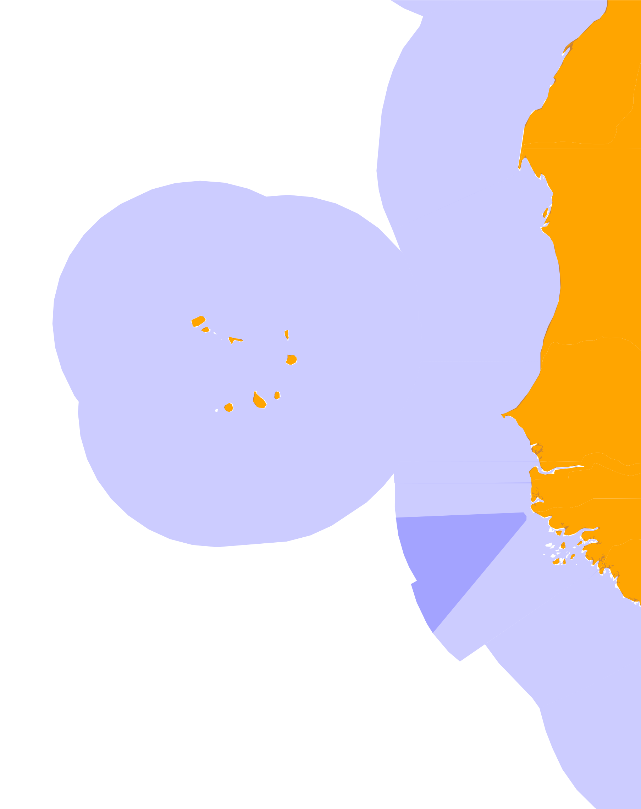
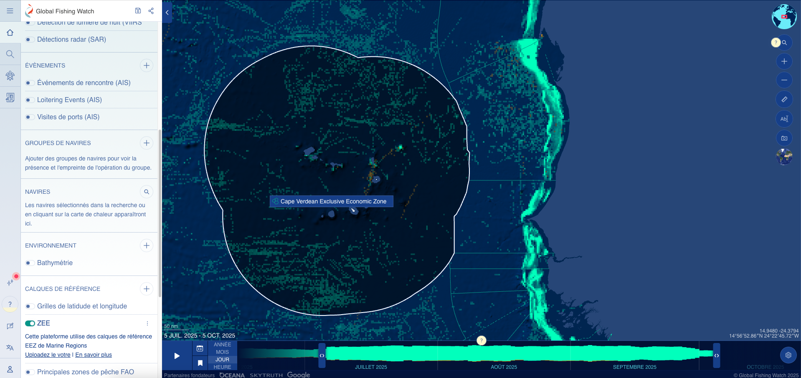
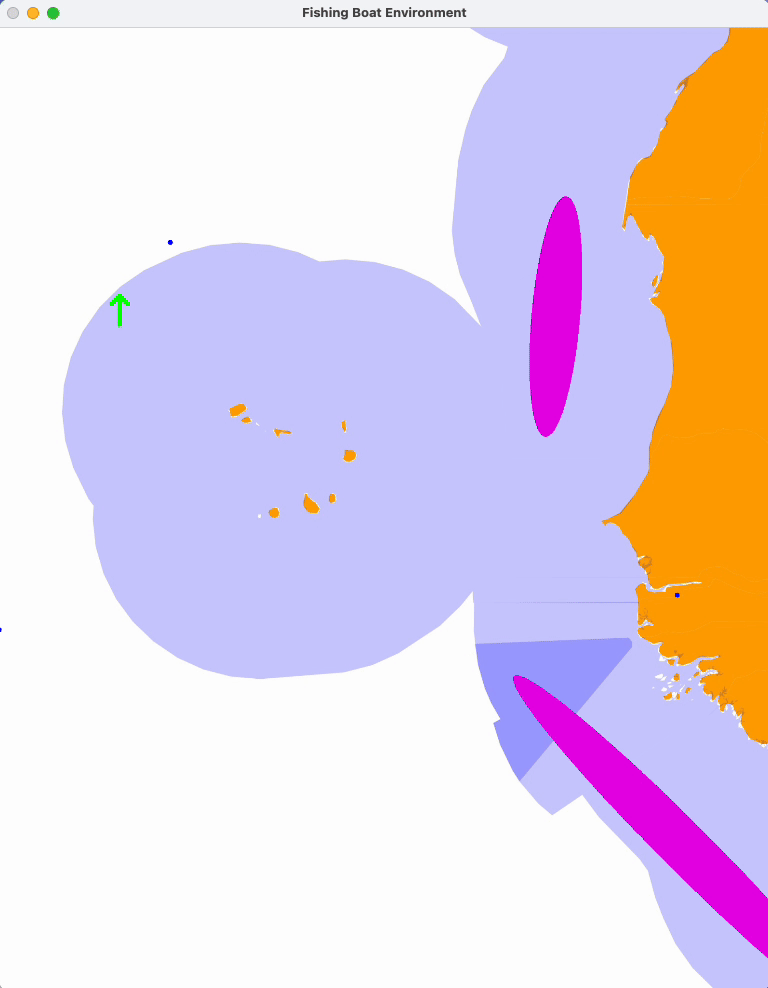
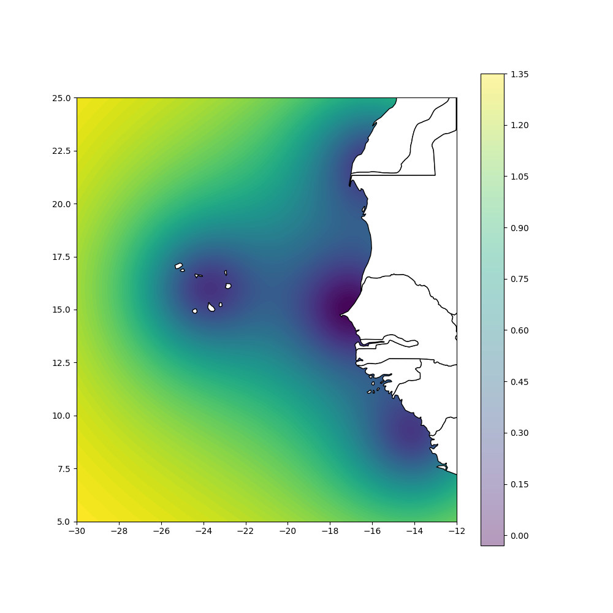
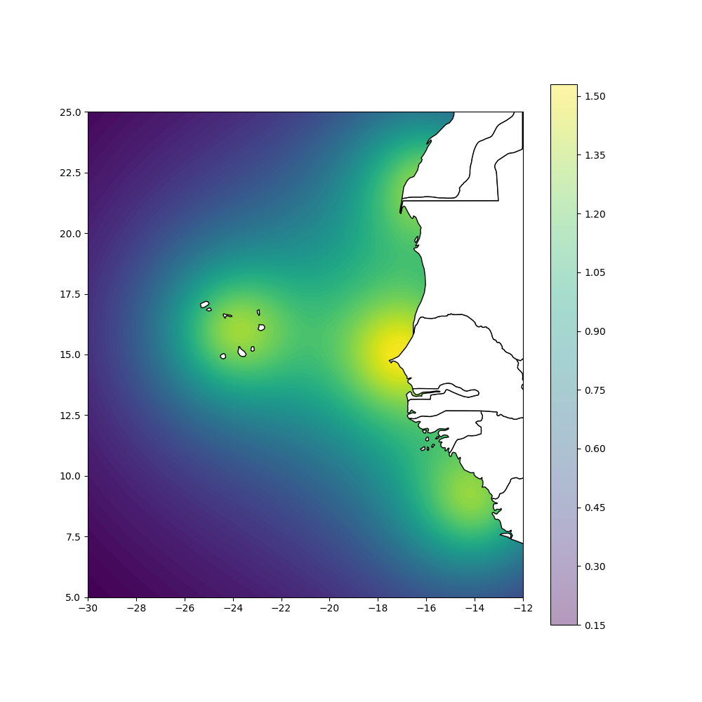
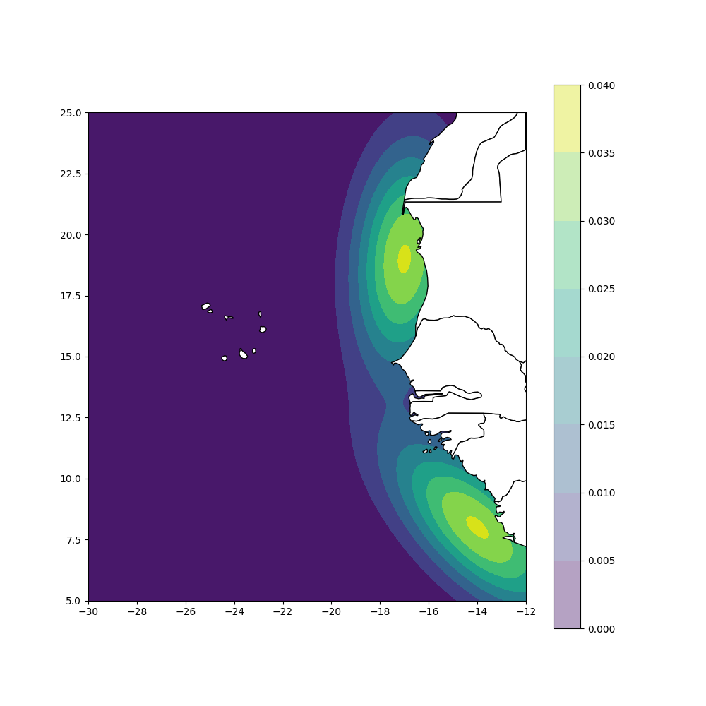

Fishing-Boat Reinforcement Learning Environment#
Modeling fishing vessel behavior in Dakar’s Exclusive Economic Zone (EEZ)
Introduction#
Context and Motivation#
Illegal, unreported, and unregulated (IUU) fishing poses major challenges for coastal countries. Nowadays, all boats are using an AIS (Automatic Identification system) to report their position and their status. This should allegedly be enough to detect and report illegal fishing practices easily, however, boats play with they device between ON and OFF. There are multiple reasons for turning off a beacon and this is not enough to detect illegal practices. Machine-learning techniques are a suitable tools for detecting the rogue vessels among the large number of available data, but the number of example of identified rogue vessels is low in the databases. This project is exploring the idea of creating synthetic data of rogue examples to enrich current databases. By analyzing and simulating realistic boat trajectories, we can train models that learn typical “fishing” or “evasive” behaviors.
In this tutorial, we will explore how reinforcement learning (RL) can be used to model the behavior of fishing vessels operating within Senegal’s Exclusive Economic Zone (EEZ). RL is a control technique, designed to optimally win a specified game situation. It is usually not used to mimic an existing behavior (this is more of a regression task) but used to find optimal solutions to problems.
Our approach#
We will use a custom Gymnasium-based environment that simulates:
The EEZ map of Dakar,
Fishing areas,
Other vessels,
And AIS (Automatic Identification System) status toggling (ON/OFF).
Our RL agent learns to act like a fishing boat — exploring, fishing, and sometimes trying to “hide” its activity by switching off its AIS beacon.
Our goals#
This environment aims to:
Provide a sandbox for training RL agents in realistic maritime contexts.
Generate synthetic vessel behaviors for research or anomaly detection.
Serve as a foundation for multi-agent or probabilistic modeling of real AIS data.
Creating an environment#
What we need#
To explore our problem, we need a simple but realistic simulation environment enhanced with real data, i.e. maps and boat data
A Simulation environment:#
This is a homemade environment, in which we control a boat with the same representation as the AIS format :
The current observation O and action A spaces are defined as:
and :
Observation is read with a very small noise of a few percents.
The boat is randomly initialized in the sea.
Speed is integrated to get boat’s position at a timestep of roughly one hour
Note: This gives a really simple simulation environment, it could be improved by including bathymetric data, weather conditions and more sophisticated noises.
Maps:#
We need to use real maps of lands and of EEZ for being realistic, these are .geojson files from [Marine Regions](https://www.marineregions.org/downloads.php, land is orange, EEZs are in blue :
{kind=link}

Real boat trajectories:#
We also project real world fishing boat data in the map, these are taken from Global Fishing Watch GFW which have a map of fishing effort derived from AIS data :

We download real boat data that are plotted with blue dots in our environment. We selected boats that are potential illegal fishers in the EEZ.
We also use GFW map data visually to define two ellipse of fishing areas in our environment, they’ll be drawn in pink in the environment.
Putting everything together#
In the following example, boat is controlled with the keyboard horizontally and vertically:

With the following information :
Blue areas : EEZ
Orange areas : Land
Pink areas : Fishing areas
Blue dots : real boats trajectories that are re-played
Arrow : our boat with his heading, green arrow means AIS ON and red arrow means AIS OFF
import gymnasium as gym
from gymnasium.envs.registration import register
from
register(
id="FishingBoatEnv-v1", entry_point="FishingEnv.fishing_boat_env:FishingBoatEnv"
)
# Initialize your environment
env = gym.make("FishingBoatEnv-v1")
# Test the environment
obs = env.reset()
done = False
while not done:
# action = env.action_space.sample() # Random action
action = env.action_from_keyboard()
observation, reward, terminated, truncated, info = env.step(action)
# obs, reward, done, info = env.step(action)
done = terminated or truncated
env.render() # Visualize the state
print(f"Action: {action}, Reward: {reward}")
Cell In[1], line 3
from
^
SyntaxError: invalid syntax
The environment rendering uses OpenCV (
cv2) and a background map of Senegal’s EEZ. Green arrows represent boats with AIS ON, red with AIS OFF. Blue dots are other (offline) boats.
💡 7. Understanding the Reward Function#
The reward function is key to shaping the boat’s behavior. The agent’s goal is to maximize its reward, which combines multiple objectives:
Reward Component |
Formula |
Purpose |
||
|---|---|---|---|---|
|
\((-0.5 \times \theta_t - \theta_{t-1} \) |
) |
Penalize sudden direction changes |
|
|
\( (0.0001 \times v^2) \) |
Encourage shorter paths |
||
|
Based on distance map |
Encourage movement toward EEZ |
||
|
\( (-1 * AIS_{ON} * IS_{ZEE} + 1 * AIS_{ON} * (1 - IS_{ZEE}))\) |
Turn AIS off inside EEZ |
||
|
\( (- AIS_{ON} * (1 - IS_{ZEE}) * \min(\Delta d, 0)) \) |
Encourage hovering near EEZ |
||
|
\( (R \sim \mathcal{N}(map~value, \frac{map~value}{2})) \) |
Reward being in fishing zones |
Example reward aggregation:
# 🧠 Your code here
# total_reward = (
# 0.2 * reward_heading
# + reward_speed
# + 0.5 * ZEE_guiding_reward()
# + 12 * fishing_reward()
# + 0.2 * AIS_reward()
# + 10 * hovering_reward()
# )
The coefficients are qualitative and can be tuned depending on the desired behavior.
Les coefficients devant chaque fonction sont qualitatifs en fonction de l’importance de l’objectif.
La pseudo-distance à la ZEE a été calculée via la fonction suivante (celle formée des boules):
{kind=link}

Et le reward pour guider vers la ZEE est :
{kind=link}

Par rapport au rapport d’étude, l’environnement n’utilise finalement pas la carte avec les ellipses. D’autres rewards, comme l’évitement des voisins, sont implémentés mais non utilisés
Pour attirer vers les zones de pêches, on utilise un reward stochastique basé sur :
{kind=link}

Le reward pour zoner autour de la ZEE a été pensé pour s’activer seulement si le bateau se rapproche de la ZEE avec l’ AIS allumé (comportement suspect d’après l’article du Monde). Il compare donc l’évolution de la distance à la ZEE, et vaut 0 si le bateau s’éloigne (sinon, on obtient un reward positif pour s’éloigner ce qui est contraire au but)
🚀 8. Training the Agent#
To train an RL agent using Stable-Baselines3, you can use PPO, SAC, or another algorithm.
# 🧠 Your code here
# from stable_baselines3 import PPO
# model = PPO("MlpPolicy", env, verbose=1, tensorboard_log="./models/tensorboard_log/")
# model.learn(total_timesteps=500_000)
# model.save("models/ppo_fishing_agent")
You can visualize the training process with Tensorboard:
!tensorboard --logdir models/tensorboard_log
⚓ 11. Results Interpretation#
Typical learned behaviors observed:
The boat navigates toward fishing areas.
The AIS beacon turns OFF inside the EEZ, ON outside.
The vessel “hovers” around the EEZ border.
Sometimes, reward conflicts lead to unrealistic behavior near certain zones.
🎥 A sample training result can be found here.
🧪 9. Evaluating the Model#
Once trained, you can load and test your model:
# 🧠 Your code here
# from stable_baselines3 import PPO
# model = PPO.load("models/ppo_fishing_agent")
# obs, info = env.reset()
# for step in range(500):
# action, _ = model.predict(obs)
# obs, reward, terminated, truncated, info = env.step(action)
# env.render()
# if terminated or truncated:
# break
📉 10. Probability Evaluation (Anomaly Detection)#
The environment also allows us to estimate the probability that a real vessel’s behavior follows the trained policy. This is done via:
python compute_probabilities_from_data.py
You can also do it programmatically:
# 🧠 Your code here
# Example pseudo-code:
# distribution = model.policy.get_distribution(observation)
# log_probs = distribution.log_prob(actions)
# probs = torch.exp(log_probs)
Low probabilities may indicate abnormal vessel behavior or overfitting in the policy.
🔧 12. Extending the Environment#
Possible improvements:
Add radar-based neighbor detection
Introduce multi-agent (MARL) capabilities
Incorporate real fishing effort data (e.g., from GFW)
Add weather or patrol data
Use Numba or JIT for faster simulation
Design new reward functions for ethical or environmental objectives
🧩 13. Conclusion#
This environment demonstrates how reinforcement learning can simulate complex, real-world behaviors like fishing vessel navigation and decision-making.
By training agents under realistic constraints (maps, AIS data, fishing zones), we can explore:
Behavior modeling,
Policy analysis,
And anomaly detection applications.